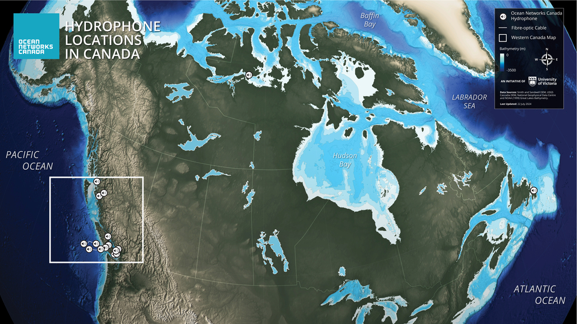
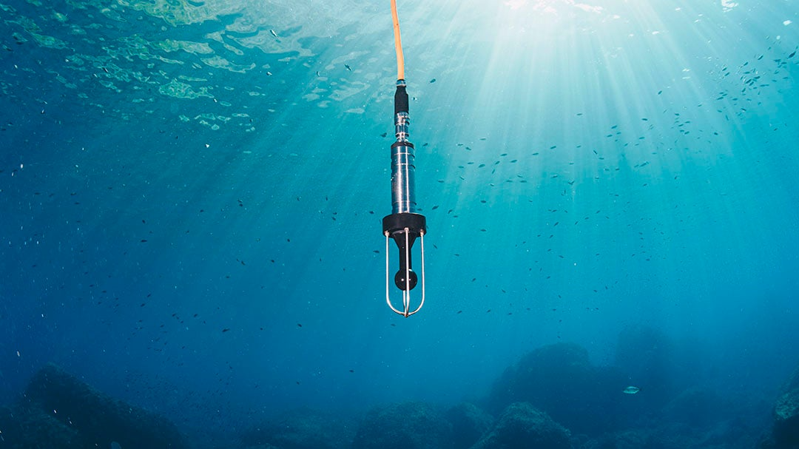

Listening to the Ocean since 2006
Overview
Ocean Networks Canada has been recording the underwater soundscape since the first installation of the VENUS node in Saanich Inlet in 2006. What started as a single location has expanded into a pan-Canadian array monitoring the Pacific, Atlantic, and Arctic coasts.
As of June 26, 2026, ONC manages 36 active hydrophones from coast to coast to coast.


This handbook is an internal source for ONC’s hydrophone network, spanning hardware specs, signal processing, and the lifecycle of an instrument.
Why listening to the ocean?
Sound is the primary way we “see” in the ocean. Because light travels poorly in water, acoustic signals are essential for navigation, communication, and monitoring the health of marine ecosystems. Unlike several oceanic instruments, hydrophones use passive acoustics, hence are a non-disruptive form of monitoring the ocean soundscape. A few applications include:
- Whale monitoring to track migration patterns, distribution, abundance, and understand behaviours.
- Ship traffic monitoring to identify areas of increase activity such as the Arctic in the recent years as sea ice melt unveils new shipping routes.
- National defense: SOSUS (sound surveillance system) to identify vessels and nuclear testing
- Resource exploration
- Seimic Survey to map minerals and detect earthquakes.

Goals and future direction for passive acoustics
- Delivering science-ready and trusted hydrophone data and data products
- Becoming a reference in terms of passive acoustics data quality assessment and calibration
- Becoming leaders in Arctic hydrophone array deployments
Territory Acknowledgment
We recognize that marine research in the Victoria region takes place on the traditional lands of the Lək̓ʷəŋən (Lekwungen) people, known today as the Songhees and Esquimalt Nations, as well as the Xwsepsum (Esquimalt) and W̱SÁNEĆ peoples.